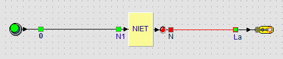

Lernpfad › Lektion 3 von 18

Ein NICHT-Gatter hat einen Eingang und einen Ausgang. Der Ausgang ist immer das Gegenteil des Eingangs. In einer Wahrheitstabelle schreiben Sie alle Möglichkeiten untereinander:
| Taster (Eingang) | Lampe (Ausgang) |
|---|---|
| 0 – losgelassen | 1 – leuchtet |
| 1 – gedrückt | 0 – aus |
Die Kühlschranklampe leuchtet, wenn die Tür offen ist. Der Türkontakt ist gedrückt, wenn die Tür geschlossen ist. Welche Schaltung brauchen Sie?
Genau dieses Beispiel: Tür zu = Taster gedrückt = Lampe aus; Tür offen = Taster losgelassen = Lampe an. Ohne das NICHT-Gatter würde die Lampe genau dann leuchten, wenn die Tür zu ist.